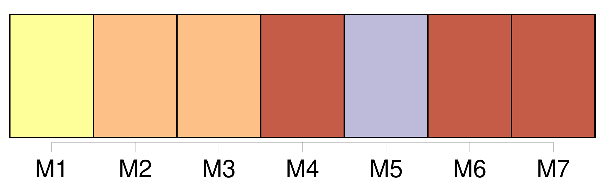
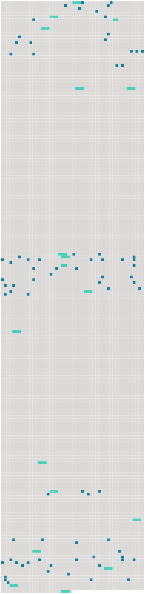

Longueur nb maillons : 97 mentions |
 |
Je ne sais pas combien de jours je restai ainsi ; mais, en me retournant dans un mouvement de spasme furieux, j’ aperçus [l’ abbé Sérapion] [qui] se tenait debout au milieu de la chambre et [qui] me considérait attentivement. [1 phrases] « Romuald, [mon] ami, il se passe quelque chose d’ extraordinaire en vous, me dit [Sérapion] au bout de quelques minutes de silence ; votre conduite est vraiment inexplicable!! [1 phrases] Prenez garde, [mon] frère, et n’ écoutez pas les suggestions du diable ; l’ esprit malin, irrité de ce que vous vous êtes à tout jamais consacré au Seigneur, rôde autour de vous comme un loup ravissant et fait un dernier effort pour vous attirer à lui. Au lieu de vous laisser abattre, [mon] cher Romuald, faites -vous une cuirasse de prières, un bouclier de mortifications, et combattez vaillamment l’ ennemi ; vous le vaincrez. [3 phrases]
» « [Je] venais vous annoncer votre nomination à la cure de CXXX ; le prêtre qui la possédait vient de mourir, et monseigneur l’ évêque [m’] a chargé d’ aller vous y installer ; soyez prêt pour demain. » Je répondis d’ un signe de tête que je le serais, et [l’ abbé] se retira. [8 phrases] Puis, ce que [l’ abbé Sérapion] m’ avait dit des artifices du diable me revenait en mémoire ; l’ étrangeté de l’ aventure, la beauté surnaturelle de Clarimonde, l’ éclat phosphorique de ses yeux, l’ impression brûlante de sa main, le trouble où elle m’ avait jeté, le changement subit qui s’ était opéré en moi, ma piété évanouie en un instant, tout cela prouvait clairement la présence du diable, et cette main satinée n’ était peut-être que le gant dont il avait recouvert sa griffe. [1 phrases] Le lendemain [Sérapion] me vint prendre ; deux mules nous attendaient à la porte, chargées de nos maigres valises ; [il] monta l’ une, et moi l’ autre tant bien que mal. [2 phrases] [Sérapion] attribuait sans doute cette curiosité à l’ admiration que me causait la beauté de l’ architecture, car [il] ralentissait le pas de [sa] monture pour me donner le temps de voir. [6 phrases] » demandai -je à [Sérapion] [Il] mit [sa] main au-dessus de [ses] yeux, et, ayant regardé, [il] me répondit : « C’ est l’ ancien palais que le prince Concini a donné à la courtisane Clarimonde ; il s’ y passe d’ épouvantables choses. [6 phrases] [Sérapion] toucha [sa] mule, dont la mienne prit aussitôt l’ allure, et un coude du chemin me déroba pour toujours la ville de S …… [10 phrases]
Je lui répondis que je la garderais, elle et le chien, et aussi les poules, et tout le mobilier que son maître lui avait laissé à sa mort, ce qui la fit entrer dans un transport de joie, [l’ abbé Sérapion] lui ayant donné sur-le-champ le prix qu’ elle en voulait. Mon installation faite, [l’ abbé Sérapion] retourna au séminaire. [96 phrases] Un matin je vis entrer [l’ abbé Sérapion] Barbara [lui] avait mandé que j’ étais malade, et [il] était accouru en toute hâte. Quoique cet empressement démontrât de l’ affection et de l’ intérêt pour ma personne, [sa] visite ne me fit pas le plaisir qu’ elle m’ aurait dû faire. [L’ abbé Sérapion] avait dans le regard quelque chose de pénétrant et d’ inquisiteur qui me gênait. Je me sentais embarrassé et coupable devant [lui]
Le premier [il] avait découvert mon trouble intérieur, et je [lui] en voulais de [sa] clairvoyance. Tout en me demandant des nouvelles de ma santé d’ un ton hypocritement mielleux, [il] fixait sur moi [ses] deux jaunes prunelles de lion et [plongeait] comme une sonde [ses] regards dans mon âme. Puis [il] me fit quelques questions sur la manière dont je dirigeais ma cure, si je m’ y plaisais, à quoi je passais le temps que mon ministère me laissait libre, si j’ avais fait quelques connaissances parmi les habitants du lieu, quelles étaient mes lectures favorites, et mille autres détails semblables. Je répondais à tout cela le plus brièvement possible, et [lui -même] , sans attendre que j’ eusse achevé, passait à autre chose. Cette conversation n’ avait évidemment aucun rapport avec ce qu’ [il] voulait dire.
Puis, sans préparation aucune, et comme une nouvelle dont [il] se souvenait à l’ instant et qu’ [il] eût craint d’ oublier ensuite, [il] me dit d’ une voix claire et vibrante qui résonna à mon oreille comme les trompettes du jugement dernier : [3 phrases] Les convives étaient servis par des esclaves basanés parlant un langage inconnu, et qui [m’] ont tout l’ air de vrais démons ; la livrée du moindre d’ entre eux eût pu servir d’ habit de gala à un empereur. [1 phrases] On a dit que c’ était une goule, un vampire femelle ; mais [je] crois que c’ était Béelzébuth en personne.
» [1 phrases] [Sérapion] me jeta un coup d’ œil inquiet et sévère ; puis [il] me dit : « [Mon] fils, [je] dois vous en avertir, vous avez le pied levé sur un abîme, prenez garde d’ y tomber. [3 phrases]
» [1 phrases] Le souvenir de Clarimonde et les paroles [du vieil abbé] étaient toujours présents à mon esprit ; cependant aucun événement extraordinaire n’ était venu confirmer les prévisions funèbres de [Sérapion] , et je commençais à croire que [ses] craintes et mes terreurs étaient trop exagérées ; mais une nuit je fis un rêve. [17 phrases] Je l’ avoue à ma honte, j’ avais totalement oublié les avis de [l’ abbé Sérapion] et le caractère dont j’ étais revêtu. [99 phrases]
Cependant, ce qu’ en avait dit [l’ abbé Sérapion] me revenait quelquefois en mémoire et ne laissait pas que de me donner de l’ inquiétude. [20 phrases]
» [Il] me regarda attentivement et me [dit] : « Non content de perdre votre âme, vous voulez aussi perdre votre corps. [1 phrases] » Le ton dont [il] me dit ce peu de mots me frappa vivement ; mais, malgré [sa] vivacité, cette impression fut bientôt dissipée, et mille autres soins l’ effacèrent de mon esprit. [18 phrases] Je ne pouvais plus avoir de doutes, [l’ abbé Sérapion] avait raison. [8 phrases] [Sérapion] me faisait les plus véhémentes exhortations, et me [reprochait] durement ma mollesse et mon peu de ferveur. Un jour que j’ avais été plus agité qu’ à l’ ordinaire, [il] me dit : « Pour vous débarrasser de cette obsession, il n’ y a qu’ un moyen, et, quoiqu’ il soit extrême, il le faut employer : aux grands maux les grands remèdes. [Je] sais où Clarimonde a été enterrée ; il faut que nous la déterrions et que vous voyiez dans quel état pitoyable est l’ objet de votre amour ; vous ne serez plus tenté de perdre votre âme pour un cadavre immonde dévoré des vers et près de tomber en poudre ; cela vous fera assurément rentrer en vous -même. [1 phrases] [L’ abbé Sérapion] se munit d’ une pioche, d’ un levier et d’ une lanterne, et à minuit nous nous dirigeâmes vers le cimetière de XXX, dont [il] connaissait parfaitement le gisement et la disposition. [8 phrases] « C’ est bien ici, » dit [Sérapion] , et, posant à terre sa lanterne, [il] glissa la pince dans l’ interstice de la pierre et [commença] à la soulever. La pierre céda, et [il] se mit à l’ ouvrage avec la pioche. Moi, je [le] regardais faire, plus noir et plus silencieux que la nuit même ; quant à [lui] , courbé sur [son] œuvre funèbre, [il] ruisselait de sueur, [il] haletait, et [son] souffle pressé avait l’ air d’ un râle d’ agonisant. [1 phrases] Le zèle de [Sérapion] avait quelque chose de dur et de sauvage qui [le] faisait ressembler à un démon plutôt qu’ à un apôtre ou à un ange, et [sa] figure aux grands traits austères et profondément découpés par le reflet de la lanterne n’ avait rien de très rassurant. Je me sentais perler sur les membres une sueur glaciale, et mes cheveux se redressaient douloureusement sur ma tête ; je regardais au fond de moi -même l’ action [du sévère Sérapion] comme un abominable sacrilège, et j’ aurais voulu que du flanc des sombres nuages qui roulaient pesamment au-dessus de nous sortît un triangle de feu qui [le] réduisît en poudre. [1 phrases] Enfin la pioche de [Sérapion] heurta le cercueil dont les planches retentirent avec un bruit sourd et sonore, avec ce terrible bruit que rend le néant quand on y touche ; [il] en renversa le couvercle, et j’ aperçus Clarimonde pâle comme un marbre, les mains jointes ; son blanc suaire ne faisait qu’ un seul pli de sa tête à ses pieds. [1 phrases] [Sérapion] , à cette vue, entra en fureur : « Ah!! [1 phrases] » et [il] aspergea d’ eau bénite le corps et le cercueil, sur lequel [il] traça la forme d’ une croix avec [son] goupillon. [1 phrases] « Voilà votre maîtresse, seigneur Romuald, dit [l’ inexorable prêtre] en me montrant ces tristes dépouilles ; serez -vous encore tenté d’ aller vous promener au Lido et à Fusine avec votre beauté?? [5 phrases] Pourquoi as -tu écouté [ce prêtre imbécile] ?? |
 |
Il est possible de télécharger la ressource sur la page Ortolang |
Si vous avez des questions ou vous voyez des erreurs, merci d'envoyer un mail à silvia.federzoni89@gmail.com |